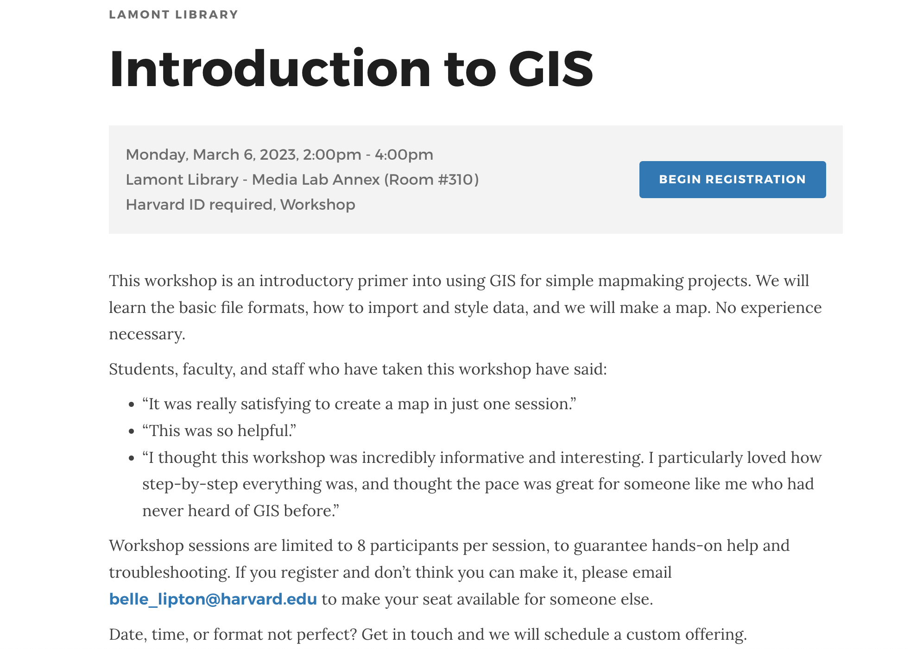
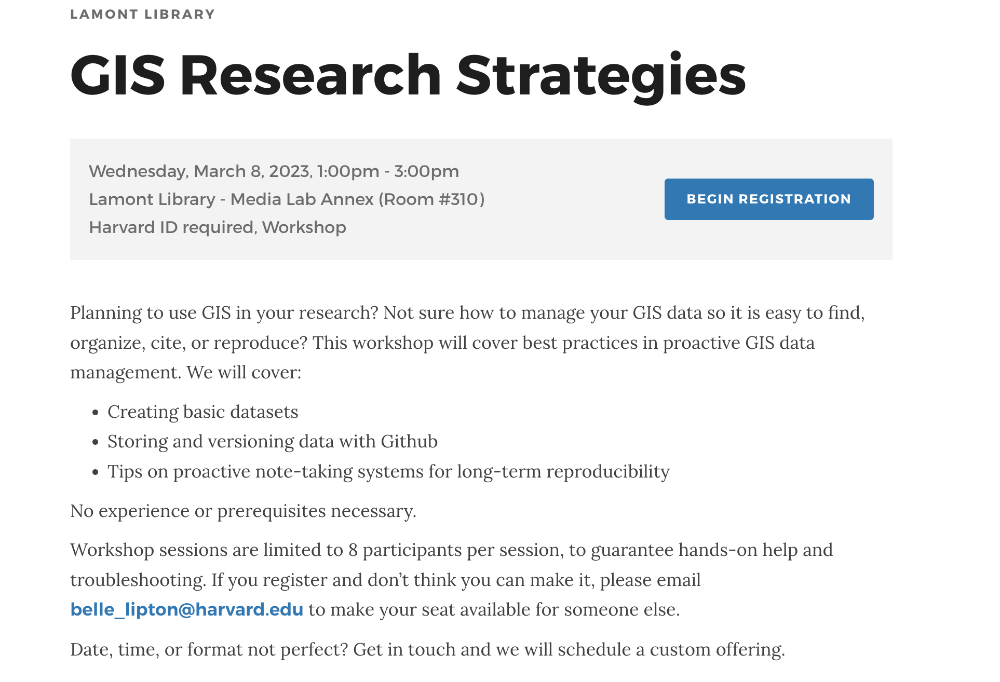
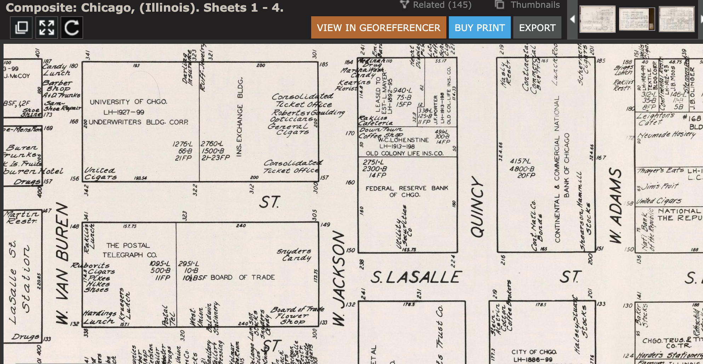
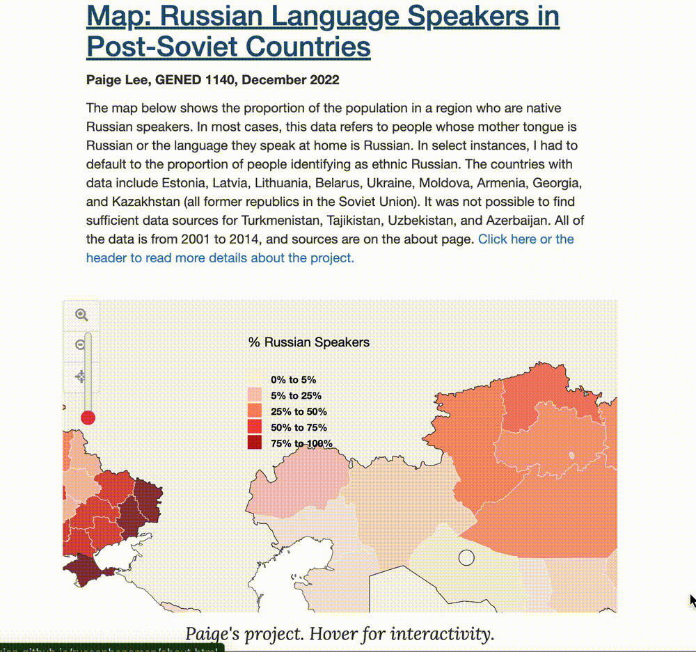
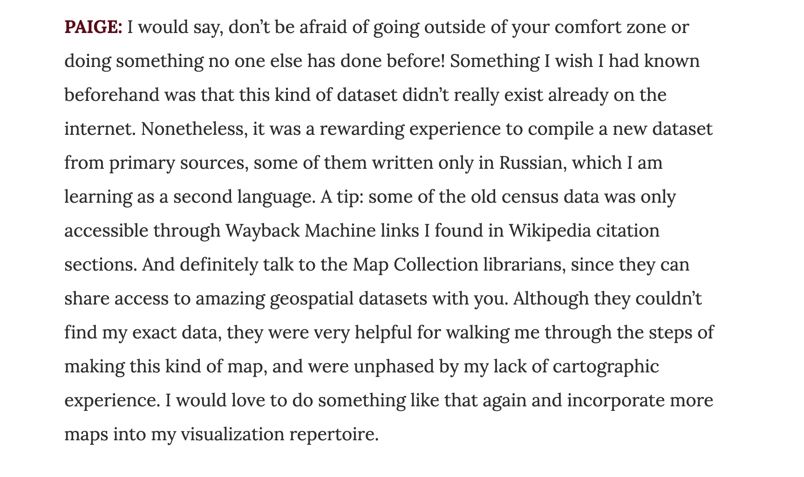

Spring 2023 Harvard Map Collection


 1880 census from Archive.org
.
1880 census from Archive.org
.
 ArcGIS Map
comparing 1890 atlas to today.
ArcGIS Map
comparing 1890 atlas to today.
 Belle’s house in college.
Belle’s house in college.
 City of Boston Archives Reading Room.
City of Boston Archives Reading Room.
 19th century insurance atlas, open to a plate of downtown Boston.
19th century insurance atlas, open to a plate of downtown Boston.
 Analyze Boston
, Boston’s open data portal.
Analyze Boston
, Boston’s open data portal.
 Vision Zero dataset, open as a table.
Vision Zero dataset, open as a table.
 Bike crash data displayed visually as individual points in GIS software.
Bike crash data displayed visually as individual points in GIS software.


Introduction to GIS workshop in the library calendar.

GIS Research Strategies workshop in the library calendar.
Humanities + critical thinking

Real Estate maps of Chicago from 1929 in the David Rumsey map collection.

Mapping project by student Paige Lee, created in D3.js.

Read about Paige's project on our blog.


 GIS heatmap of density of restaurants in Boston.
GIS heatmap of density of restaurants in Boston.

2 hours?
Next Steps
- Email maps@harvard.edu or belle_lipton@harvard.edu
- Workshop signups on the library calendar
- We will help design + scaffold assignments
- We will schedule custom workshops